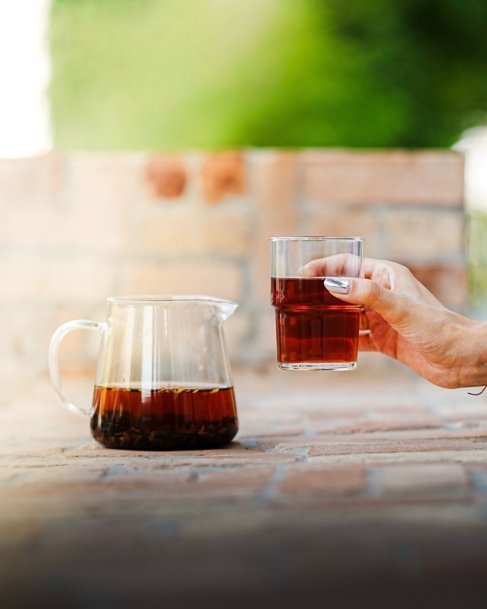
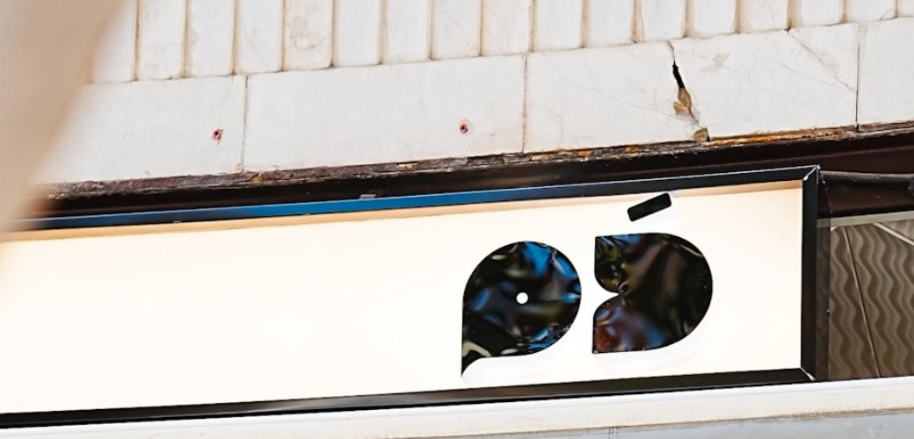
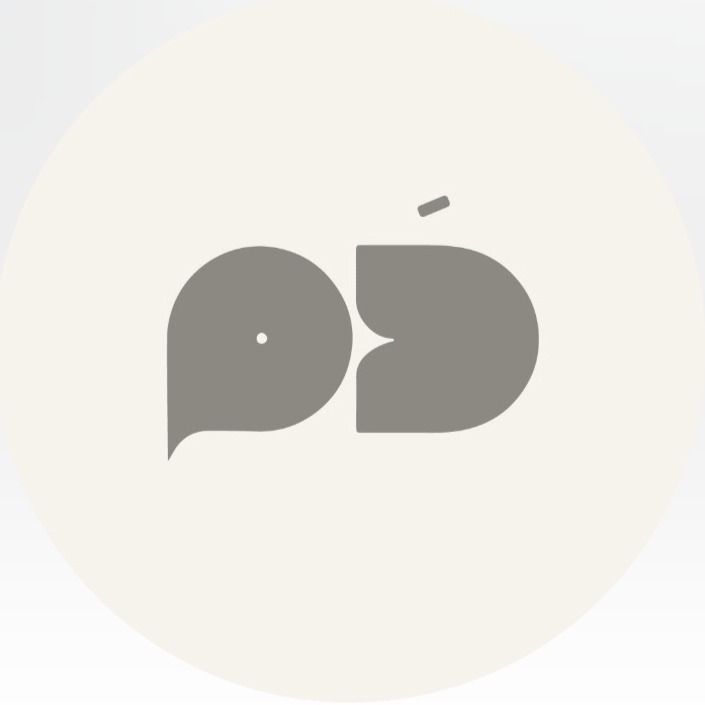

نه قهوه است، نه دقیقاً چای؛ چیزی میان این دو، با عطری میوهای و شیرینی ملایم.
بدون نشستن، بدون عجله؛ یک دم، همانطور که باید باشد.

ما را پیدا کنید
شیراز، ایران — دمنوشی برای همراه بردن
@damlocal
شیراز، ایران
نه قهوه است، نه دقیقاً چای؛ چیزی میان این دو، با عطری میوهای و شیرینی ملایم.
بدون نشستن، بدون عجله؛ یک دم، همانطور که باید باشد.

شیراز، ایران — دمنوشی برای همراه بردن
@damlocal